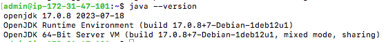
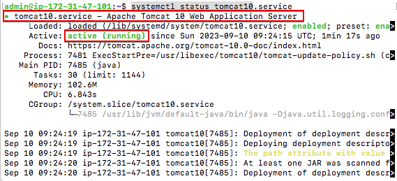
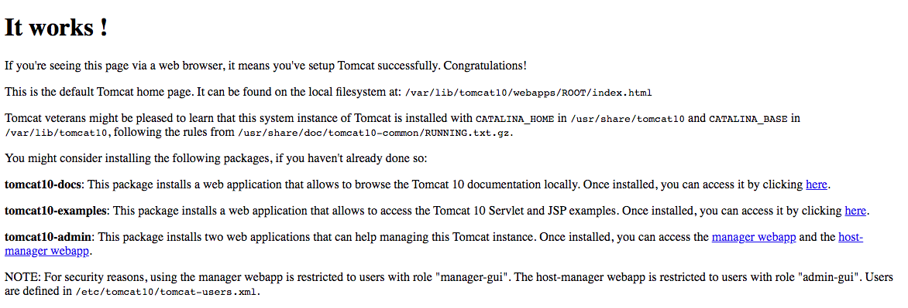
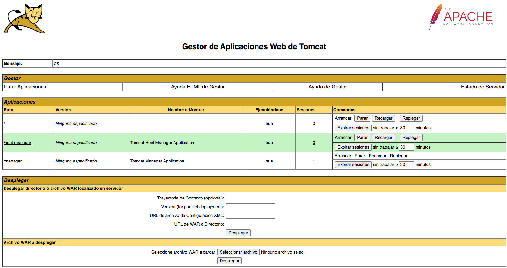
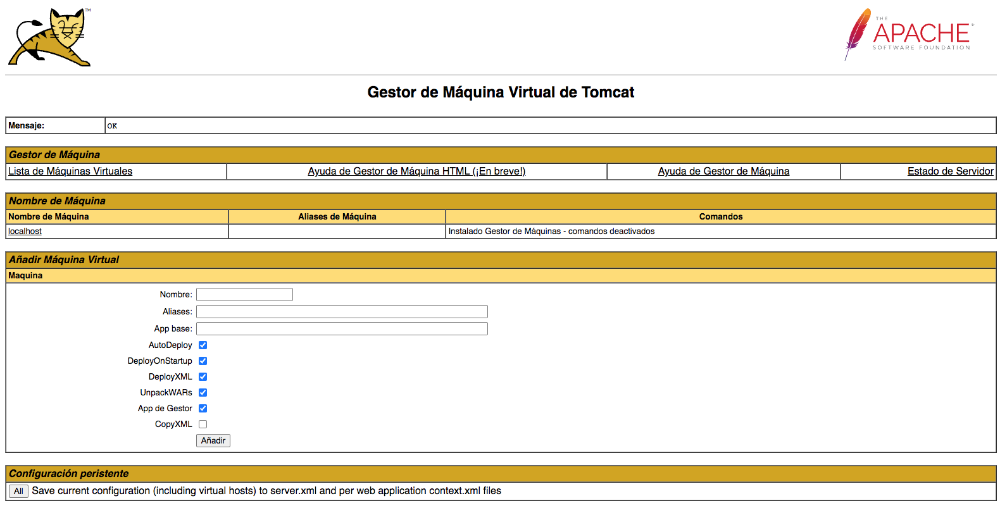

Práctica 1: Instalación de Tomcat
Introducción
Recordamos que estamos en el apartado de "Despliegue de aplicaciones Java" y, com ya vimos en la teoría, Tomcat es una de las opciones para este tipo de despliegues.
En esta práctica vamos a instalar el servidor de aplicaciones Apache Tomcat en su última versión disponible.
Si consultamos el apartado de versiones de Tomcat en su página oficial, nos daremos cuenta de que la última versión estable disponible en el momento de redacción de esta práctica es la 10.1.15 que soporta versiones de Java 11 y posteriores. Esto podría hacer que algunos despliegues que realicemos con ficheros .war desarrollados en versiones anteriores de java planteen problemas. Esto nos servirá para ver la importancia de usar las mismas versiones en fase de desarrollo y fase de despliegue y acordar entre desarrolladores y encargados de despliegue cualquier actualización antes de llevarla a cabo.
En Java 9 se introdujeron novedades como un nuevo sistema de módulos (Jigsaw), entre otras.
En Java 11 se dio un paso más al haber renombrado completamente las rutas de paquetes "javax.*" a "jakarta.*". Oracle, a pesar de haber hecho público el desarrollo de Java, no hizo lo mismo con su nombre. Por tanto, si el paquete a desplegar ya está compilado, poco podemos hacer. Pero si disponemos del código fuente y nos da un error de complilación, podemos mirar si los paquetes que está usando son los "javax.*" y sustituirlos por "jakarta.*" e intentar complilar de nuevo.
Instalación de Tomcat
Esta práctica es muy sencilla y va a consistir en realizar la instalación del servidor de aplicaciones Tomcat, en una máquina virtual Debian.

Creación de la máquina virtual
Para empezar, entra en AWS Academy y crea un nuevo EC2 Debian con estas características.
- Llámale PTomcat.
- Dale los recursos que te ofrece por defecto.
- El acceso al servidor Tomcat se realiza por el puerto TCP 8080. Puedes modificar el Grupo de seguridad ahora para permitir el acceso por http, https y TCP 8080 ahora o editarlo más tarde.
Instalación de Java
Una vez creada, entra como administrador y vamos a instalar Java en primer lugar.
-
Comprobar si está instalado:
En caso de no estarlo lo indicará
-
De no estar instalado lo haremos con:
sudo apt-get update && sudo apt-get upgrade sudo apt-get install default-jdk sudo apt-get install default-jreVolver a comprobar:
java --versionDebería aparecer una pantalla como esta:

Una vez Java instalado pasamos a la instalación del servidor TOMCAT propiamente dicho.
Instalación de Apache Tomcat
Se puede hacer tanto con el administrador de paquetes apt como de forma manual. La forma más recomendable por su sencillez es la primera.
Ejecutamos
Comprobamos si está instalado
Y comproblamos que está correctamente instalado.

Presionaremos la tecla q para volver al prompt.
Ahora comprueba que tienes acceso al servidor escribiendo en un navegador en tu equipo local http://IP_SERVIDOR:8080 debe aparecer la siguiente pantalla. Fíjate que estamos accediendo por http (no https) y por el puerto 8080. Si no modificaste el Grupo de Seguridad en AWS para permitir el acceso a este puerto, hazlo ahora.

Gestionar de forma gráfica Tomcat y creación de usuario de Tomcat.
Para gestionar Tomcat de forma gráfica, tenemos un interfaz gráfico al que se accede mediante http://IP_SERVIDOR:8080/manager.
Si intentas acceder verás que te pide un usuario y una contraseña y no podrás acceder. Hemos de crear un usuario de Tomcat con esos permisos.
Vamos a crearlo modificando el archivo /etc/tomcat10/tomcat-users.xml (con el
editor que quieras).
Merece la pena dedicarle un tiempo a leer ese fichero. Verás que Tomcat tiene una serie de roles administrativos predefinidos. Hemos de activar aquellos que queramos y luego asignarlos a los usuarios que deseemos. Para poder tener acceso al:
- "Gestor de Aplicaciones Web de Tomcat" deberemos activar el rol "manager-gui".
- "Gestor de Máquina Virtual de Tomcat" necesitaremos activar el rol "admin-gui".
<role rolename="manager-gui"/>
<role rolename="admin-gui"/>
<user username="admin" password="ieselcaminas" roles="admin-gui,manager-gui"/>
Reinicia tomcat: sudo systemctl restart tomcat10
Comprueba el estado: sudo systemctl status tomcat10
Accede ahora a http://IP_SERVIDOR:8080/manager, introduce el usuario y contraseña creado y deberías acceder al "Gestor de Aplicaciones Web de Tomcat".

Accede ahora a http://IP_SERVIDOR:8080/host-manager, introduce el usuario y contraseña creado y deberías acceder al "Gestor de Máquina Virtual de Tomcat".
